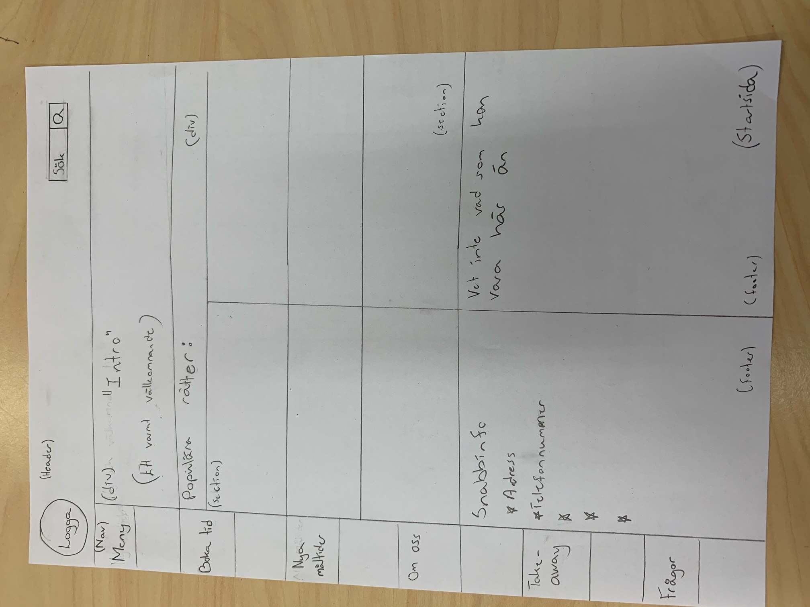
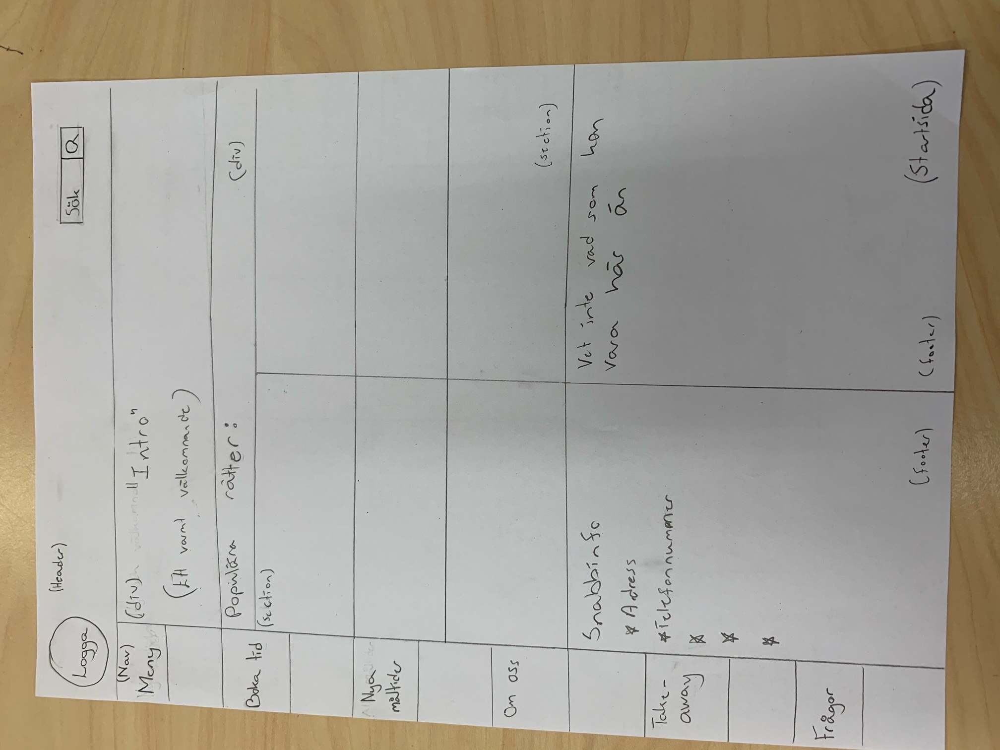

Dokumentation projekt Vt
1. Idébeskrivning
Mine idé kommer vara att göra en resturang till familjer med småbarn. Det kommer vara en tydlig meny
på min hemsida som kommer visa vilka olika rätter det finns på min fina resturang. Jag kommer inte ha en
annan tidigare sida som grund då jag tycker att jag lär mig mer och mer och kan förmedla min kod på ett bättre
sätt nu. Jag vet inte vilket namn jag kommer ha på min resturang men på hemsidan kommer det finnas ett runt
emblem och en "banner" som ger min hemsida lite mer liv. Mitt tema till resturangen är barnmat. Detta kommer endast
finnas 4 olika vuxenmåltider och extremt mycket barnmat. Detta kommer göra så att barnen kommer älska min resturang
och alla föräldrar kommer vilja gå till min resturang för att se barnen glada. Temat på hemsidan kommer vara
med färgerna baby blue och baby pink.
2. Planering
Min planering till denna uppgift är att alltid köra 100% på lektionerna. Jag ska också försöka skriva på min hemsida
hemma också för att verkligen få den hemsidan min resturang förtjänar.
2.1 Handskiss
.jpeg) 

2.2 Schema
Jag tänker att det mesta gör jag under lektionstid men om jag antingen känner för det eller känner
mig stressad skriver jag kod hemma också.
| Vecka | På lektionen | Utanför lektionen |
| 4 |
|
|
| 5 |
|
|
| 6 |
|
|
| 7 |
|
|
| 8 |
|
|
| 9 |
|
|
| 10 |
|
|
| 11 |
|
|
| 12 |
|
|
3. Dokumentation
Lektion vecka 47
Idag har jag brainstormat. Än så länge har jag
kommit på att min resturang ska ha temat barnmat så att alla barn blir nöjda med sin mat. Jag har
än så länge gjort två skisser till startsidan och menyn. Jag ska försöka göra sista skissen samt
lite kod innan nästa lektion har böjat. Jag ska också skriva in mitt schema så att jag vet vad som ska
ha gjorts så jag inte hamnar efter och blir stressad.
Mellan lektionen vecka 47 och 48 har jag jobbat med min startsida. Den är snart klar, några små ändringar
kvar. Jag har utgått från min skiss.
Lektion vecka 48
Idag har jag kollat igenom vad jag har gjort på min hemsida än så länge. Jag har också lagt till två extra
hml sidor samt lagt en länk till dem sidorna i min nav. Idag har jag också testat mina kontraster på text och
bakgrund och kom fram till att jag ska lägga till en box runt min text i headern för att få en tydligare och
synligare text. Min bakgrund till headern är en bild och det kan därför vara svårt att hitta en färg som passar till
alla olika färger i bakgrunden.
Det som har gått bra idag är att jag fröskt hitta nya saker att förbättra på det jag än så länge har gjort.
Det som gick mindre bra idag var att det var svårt att jag har varit lite lat idag då jag kände att jag har kommit än så länge
väldigt långt och då hamnar man oftast på latsidan. Jag ska förbättra detta genom att både ta in tid hemma samt jobba till
100% nästa lektion.
Lektion vecka 6
Idag har jag jobbat mycket med css och fått fram några snygga estetiska saker på min resturang hemsida.
Jag tycker att arbetet har flytit på bra idag och jag känner mig nöjd med vad jag har gjort. Jag har också
lagt till några mer bilder till min meny sida.
Lektion vecka 8
Lektion vecka 9
Lektion vecka 10
Lektion vecka 11
Lektion vecka 12
4. Testning
5. Utvärdering